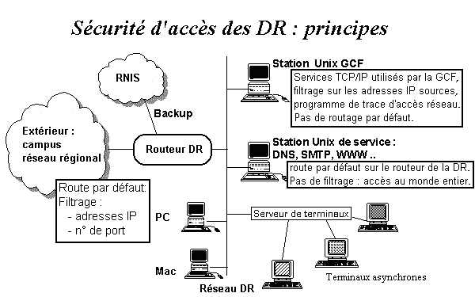
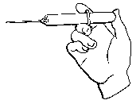

l'inspiration pour ce numéro 7 de Sécurité informatique ? Les 7 collines de Rome... les 7 couleurs de l'arc-en-ciel... les bottes de 7 lieues...? Après avoir tourné 7 fois ma plume dans ma main, je me contenterai des 7 péchés capitaux de l'utilisateur des systèmes d'information.
L'avarice - "Et avec cette nouvelle machine, je vous mets un abonnement à un antivirus, un logiciel d'audit de sécurité et un garde-barrière ?" "Oh non, Monsieur, ces accessoires coûtent beaucoup trop cher, le matériel suffira."
La colère - Ils m'énervent avec leurs procédures de sécurité, leurs changements de mot de passe et leurs sauvegardes! Je ne gaspillerai pas mon temps à de telles vétilles, il est d'abord voué au progrès de la science.
L'envie - Il n'est pas mal du tout ce nouveau logiciel qu'Untel vient de s'offrir. J'aimerais bien l'acquérir mais ma ligne de crédit est épuisée. Bah ! Si je le lui demande gentiment, il m'en fera bien une petite copie. La gourmandise - Encore un logiciel en freeware... Intéressant ce fichier de données... Passionnant ce nouveau jeu... Ah, la belle image ! Importons-les vite, j'ai encore de la place sur mon disque dur.
La luxure - J'adore fréquenter les mauvais lieux de l'Internet, les rencontres que l'on y fait sont tellement excitantes. Et tant pis pour les maladies honteuses qu'on peut y attraper !
L'orgueil - Les hackers et les crackers peuvent aller se rhabiller car je suis meilleur qu'eux. Mon génie déjouera toutes leurs attaques. Je peux dormir sur mes deux oreilles, ils ne m'auront pas.
La paresse - Tiens, il y a bien 7 jours que je n'ai pas fait de sauvegarde et 7 mois que je n'ai pas changé mon mot de passe. Bof, au point où j'en suis, ça attendra bien quelques jours de plus.
Faites vite votre examen de conscience, et si vous n'avez jamais tenu l'un de ces propos, Sécurité informatique se fera un plaisir de vous offrir une magnifique auréole en papier doré.
Philippe Schreiber
Fonctionnaire de Défense du CNRS

Dans son livre Guerres dans le cyberspace, Internet et les services secrets qui vient de paraître, le journaliste Jean Guisnel raconte une bien savoureuse histoire. Son authenticité est confirmée par un message du principal intéressé qu'on peut lire dans la liste Internet Computer Underground Digest # 7.86 du 1er novembre 1995.
En 1983, un étudiant lyonnais ayant commis quelque peccadille fut contacté par un service officiel qui lui aurait promis de passer l'éponge s'il consentait à être sa grande oreille dans les réunions de hackers. Cette "écoute" aurait donné une telle satisfaction qu'en 1989 on se serait décidé à passer la vitesse supérieure en chargeant notre jeune homme de fonder le CCCF : Chaos Computer Club of France. Façon comme une autre de créer un abcès de fixation chargé d'attirer le plus grand nombre de hackers de notre pays et, incidemment, de les identifier. Après s'être nommé président du CCCF, notre héros fut rapidement reconnu comme le grand expert national en virus et autres malversations, donnant des interviews, paraissant à la télévision; tout ça à la plus grande satisfaction de son "commanditaire".
Pendant une période de 52 mois, il aurait envoyé quelques 1 032 rapports avant de rompre toute relation avec son employeur, en 1991. Depuis, il serait entré à Compuserve...
Jean Cocteau disait "Puisque ces mystères me dépassent, feignons d'en être l'organisateur"

Au 25 octobre 1995, 11 h 08, l'éditeur de l'antivirus Dr. Solomon recensait 7 190 virus dans sa collection de spécimens. Est-il nécessaire de préciser qu'il s'agit de virus s'attaquant aux PC compatibles IBM ?

Durant l'année 1995, le système d'information de gestion du CNRS mis en úuvre dans les délégations régionales a subi de profonds changements relatifs à son architecture physique. Dans un premier temps, toutes les délégations régionales ont été équipées de réseaux locaux aux normes en vigueur (Ethernet 10BaseT, TCP/IP) et toutes les délégations régionales ont été raccordées à RENATER. Ensuite, les anciens matériels supportant les applications concernant la gestion comptable et financière (GCF) ont été remplacés par des matériels UNIX (HP-9000 G35, G45 et G50) plus performants et plus économiques. Les communications internes et externes se font grâce à cette infrastructure qui permet l'interconnexion des postes de travail entre eux et vers l'extérieur.
Cela concerne par exemple les échanges de données associés aux applications de gestion comptable et financière entre les délégations et le Siège pour les consolidations mensuelles ou entre les délégation et les unités raccordées à RENATER pour l'application Xlab. Sont également concernées les applications classiques de l'Internet (messagerie SMTP, serveurs Web ou Wais) qui peuvent ainsi être mises en oeuvre dans les délégations régionales.
L'utilisation de RENATER par les applications du système d'information de gestion du CNRS offre de nouvelles possibilités. On peut ainsi assurer des communications à plus haut débit et à moindre coût entre l'ensemble des acteurs : gestionnaires des délégations régionales, des services du Siège et des laboratoires. Cette ouverture vers l'ensemble de ces acteurs doit être maîtrisée efficacement car elle débouche sur le monde extérieur et sur l'Internet, et il est donc nécessaire de protéger les ressources du système d'information contre les intrusions et les actes de malveillance.
Dès le début du projet, un comité sécurité, constitué de RSI (Responsable Système d'Information en délégation régionale), de responsables système et réseau du SOSI et d'experts sécurité réseau de l'UREC (tel que le chargé de mission sécurité réseaux auprès du fonctionnaire de défense), a défini des principes destinés à garantir la sécurité des ressources du système d'information des délégations régionales et la confidentialité des données.
Ce comité veille à la définition, à la mise en place et au suivi de ces principes. Le développement et la mise en place des outils associés sont assurés par le SOSI. Leur mise en úuvre relève, elle, des délégations régionales. Une formation système et réseau a été dispensée au personnel technique des délégations. Par ailleurs, les consignes et recommandations d'utilisation ont été soigneusement transmises à ces personnels pour qu'ils puissent en assurer la mise en oeuvre.
Ces principes sont appliqués aux différents composants. Cela concerne les équipements réseau permettant les communications avec l'extérieur via RENATER. Chaque délégation régionale dispose d'un routeur dédié qu'elle soit sur un site isolé ou sur un campus. Cette mesure s'étend aux matériels UNIX qui supportent les applications de gestion (GCF) et les applications de l'Internet (DNS, messagerie, serveur Web).
 Pour isoler de l'extérieur la machine qui supporte les applications de gestion, des précautions spéciales ont été prises : mécanismes de filtrage et restrictions d'accès (au niveau du routeur en particulier) Cette machine dédiée n'est pas accessible depuis l'extérieur du site et elle est invisible hors du réseau local de la délégation régionale, en particulier de RENATER et de l'Internet. Seuls les gestionnaires du site peuvent s'y raccorder et y travailler. Leur identité y est, de plus, contrôlée et enregistrée. Les différents services de communication (comme les transferts de données avec les unités pour l'application Xlab, les transferts de données avec le Siège pour les consolidations, les transferts de programmes avec le SOSI, la messagerie...) sont assurés par une machine distincte qui n'est accessible et visible depuis l'extérieur que pour les services répertoriés et certains interlocuteurs déterminés. Un mécanisme différé et approprié est mis en úuvre en local pour assurer les échanges d'informations entre ces deux machines lorsque cela est nécessaire. Cette machine de communication est un élément qui permet d'isoler la machine applicative et en contrôle l'accès depuis l'extérieur. Les mécanismes de filtrage et de contrôle d'accès au niveau réseau s'ajoutent aux mécanismes d'authentification mis en úuvre au niveau des applications.
Il n'y a pas de restriction concernant l'accès vers les services extérieurs de l'Internet, et toute personne de la délégation régionale peut y accéder depuis un poste de travail raccordé au réseau local. Sont concernés les services réseau tels que la messagerie SMTP ou les serveurs Web ou Wais, ceux des unités du CNRS ou d'autres organismes, par exemple.
Au-delà de la définition des principes généraux et de leur mise en place initiale à travers différentes techniques et outils, la sécurité de l'ensemble du système d'information est assurée par l'implication de chacun. Les techniciens - mais aussi les gestionnaires et utilisateurs - doivent veiller à sa pérennité et chacun en est donc responsable à son niveau.
Patrick Bertellin
(SOSI/Architecture technique)
Patrick Bertellin peut être joint à bertellin@sosi.cnrs.fr

La Mafia est à la mode. Pour s'en convaincre, il n'est que de regarder le nombre de séries (plutôt du genre b--) que nous "offrent" les diverses chaînes de télévision. Science et Vie, magazine de vulgarisation scientifique à gros tirage, s'y est mis à son tour et, dans son numéro d'août 1994, publiait un article intitulé "La Mafia infiltre les réseaux numériques. Du rififi sur Internet".
Le but recherché est de pouvoir transmettre des informations confidentielles tout en n'ayant l'air de rien. Surtout ne pas se faire repérer, donc ne rien transmettre qui soit ostensiblement codé.
La méthode, nous indique l'article, consiste à laisser "...l'ordinateur remplace[r], pour certains pixels de l'image, le nombre correspondant à une couleur par celui d'une lettre. Chacun des pixels est repéré par ses coordonnées horizontale et verticale. Pour décoder le message, l'ordinateur du destinataire possède en mémoire les coordonnées de tous les pixels ainsi traités. en lisant leur code et en l'interprétant comme un caractère, il pourra reconstituer le message original." (p. 109).
Ce procédé porte un nom : la stéganographie. Pour juger de son efficacité, nous nous sommes livrés à quelques essais pour lesquels nous avons choisi des images de type bitmap en 256 couleurs (d'abord en 320 x 200, puis en 640 x 480 de type .BMP) et le langage C pour la programmation.
256 couleurs permettent de représenter directement les 156 caractères de l'alphabet ASCII étendu ou ANSI. Nous avons pris pour commencer quelques images représentant des tableaux impressionnistes et nous avons tenté de coder par remplacement de pixels une phrase de 198 caractères. Résultat désastreux : l'oeil est très sensible à un mouchetis de points d'une couleur différente de celle de la zone où ils figurent. Nous sommes alors passé à des images de 640 x 480 représentant, en particulier, des paysages des USA avec des dominantes marquées : paysage de neige, rochers rouges des déserts, cascade au milieu d'un océan de verdure, etc. Là, la résultat est très satisfaisant. Même pour un message de 600 caractères, l'oeil ne remarque pratiquement rien, ce qui est dû non seulement à un nombre de pixels plus élevé, mais aussi à un grand nombre de couleurs voisines dans la palette.
Dans le domaine scientifique, il y a deux types d'images qui conviennent encore mieux : les clichés de chambre à bulles et surtout les photos du ciel prises avec un instrument à grand champ (télescope de Schmidt, par exemple). Nous avons essayé de dissimuler un message dans une image représentant un astronaute revêtu de son scaphandre argenté sur un fond de ciel étoilé : c'est quasiment parfait. La méthode est donc efficace.
Il semble donc que la stéganographie soit un outil acceptable pour faire transiter des messages cachés dans des images. Le point délicat de son emploi n'est pas tellement d'ordre technique : il faut que la transmission d'images entre "partenaires" ait l'air le plus innocent possible et ne vienne pas comme un cheveu sur la soupe. Pour un laboratoire, les exemples que nous venons de citer rendent la chose plausible.
Bien entendu, ceci n'est qu'un aperçu de la méthode. Il y a de nombreux détails d'implémentation qui permettent de rendre le procédé à la fois plus discret et plus efficace. Le lecteur curieux pourra trouver une intéressante bibliographie ainsi que quelques programmes sur le serveur Web http://cs/hut.fit/ssh/crypto. Le même procédé peut s'appliquer à des fichiers de sons, et sans doute encore mieux, car l'oreille est moins sensible à des variations d'amplitude apériodiques d'une forme d'onde que l'oeil ne l'est à des détails colorés incongrus. Et puis, une image peut se scruter aussi longtemps qu'on le souhaite, alors que le son nécessite l'intervention de la dimension "temps" pour être perçu. Il sera donc plus facile de ne pas attirer l'attention, encore que l'échange de fichiers de sons ne soit pas encore aussi fréquent que celui des images. Mais, dans des activités scientifiques comme l'entomologie, par exemple, il pourra sembler naturel. Pour terminer, rappelons que la loi réglemente l'emploi de la cryptologie sur les réseaux publics.

The Giant black book of computer viruses.
Ecrit par Mark Ludwig, ce livre détaille tout au long de 672 pages
quelque 37 virus allant du plus simple au plus sophistiqué, destinés
à des environnements divers : Windows, UNIX, OS/2... Bref tout ce
qu'il faut pour mettre à mal l'installation la mieux gardée.
| Faire le silence sur ce genre de publication serait appliquer la politique de l'autruche |
.
Mark Ludwig se défend de contribuer à répandre des virus en faisant remarquer que bien connaître son ennemi est le seul moyen d'apprendre à s'en protéger. Mais, en attendant, il est bon de savoir que de "bonnes recettes" vont se trouver bientôt largement diffusées, ce qui risque de nous amener une recrudescence d'infections virales.
D'un autre côté, l'auteur donne aussi des recettes d'anti-virus, (accompagnées des programmes source). Le livre contiendrait également un virus très particulier, KOH, qui serait en réalité un outil de cryptographie sécurisant le disque dur où il est installé. Notons que l'usage local d'un outil de cryptographie n'est pas interdit. C'est son emploi sur des systèmes de transmission publics qui est réglementé. Pour l'instant, ce livre n'existe qu'en version américaine, mais cela ne devrait pas trop limiter sa diffusion.
Cryptographie appliquée, algorithmes, protocoles
et codes source
par Bruce Schneier (International Thomson Publishing). Beaucoup de
détails pratiques sur les algorithmes et les protocoles, allant jusqu'à
la description complète de systèmes à double clefs.
Des informations sur la NASA. C'est un véritable traité de
cryptographie accompagné de programmes et de quelques réflexions
savoureuses sur la façon de communiquer sans risque.
Guerres dans le cyberespace
de Jean Guisnel (Editions de la découverte). Ce livre est
cité dans deux articles de ce numéro de Sécurité
informatique. A lire par ceux qui croient que nous exagérons les
risques (et périls) de l'Internet.

Le canular Good Time (ce texte qu'il ne faut pas même lire sous peine d'attraper un virus) a de nouveau montré sa tête au début du mois de novembre et a provoqué quelques émois dans nos établissements de la région parisienne par un début d'alerte un peu hâtif. Le danger de ces fausses alertes, c'est qu'elles affaiblissent la méfiance de l'utilisateur : à force de crier au loup... Comme on pouvait s'y attendre, des petits malins ont tenté de profiter de l'occasion en appelant ainsi un véritable virus (doté d'un mécanisme d'attaque traditionnel par exécution d'un programme).
| Mais la communauté anti-virus refuse d'entrer dans ce jeu et a précisé par un message de l'éditeur d'antivirus, Dr. Solomon, que le véritable nom de ce virus est GT-spoof (littéralement "la blague GT"). |

|  | Une bonne adresse |
Il existe un serveur Web sur lequel on peut trouver des versions récentes d'anti-virus réputés comme Thunderbyte, F-Prot, McAfee, MSAV... Voici son URL :

L'adresse FTP figurant dans le numéro 5 pour l'antivirus Macintosh est périmée. En voici une récente :
Mais il existe d'autres sites "miroir". Celle qui est donnée ici a été vérifiée le 22 septembre 1995.